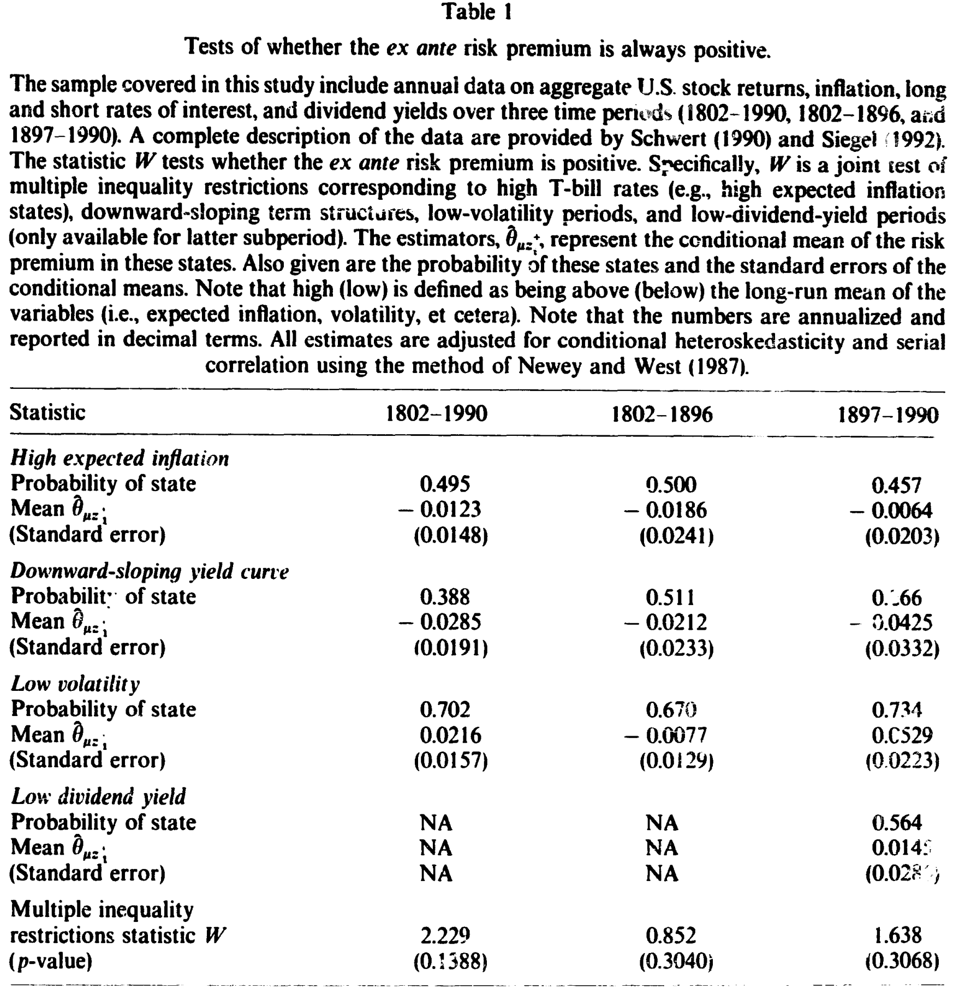
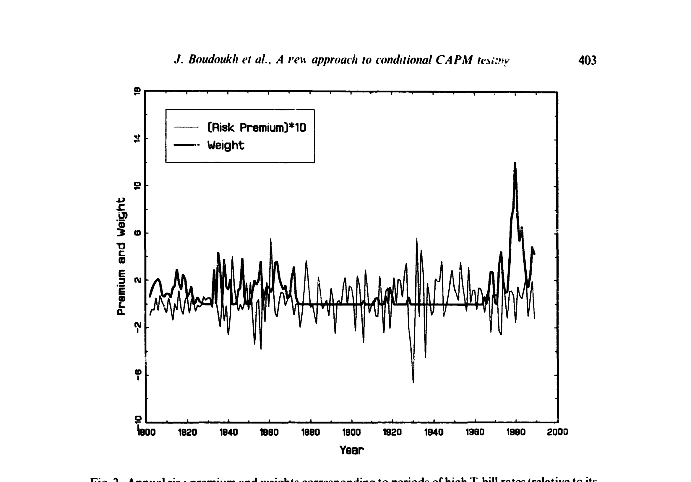
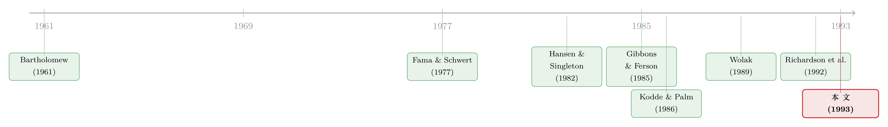

风险溢价真的永远为正吗？——一个把「不等式」搬进资产定价检验的新办法
本文读的是 Boudoukh, Richardson & Smith (1993, Journal of Financial Economics)：他们提出了一套检验「条件资产定价模型所隐含的不等式约束」的方法——容易实现、几乎不需要假设条件分布、且只靠很弱的平稳性。把这套方法用到「事前风险溢价是否恒为正」这个老问题上，他们给出了第一份可靠的统计证据：事前风险溢价在某些状态下确实是负的，而这些状态对应着高预期通胀、尤其是向下倾斜的收益率曲线。
1 一个「天经地义」的假设，从没被正面检验过
先来想一件几乎所有人都默认成立的事：市场组合的期望收益，应该高于无风险利率。
这件事的逻辑非常朴素。如果投资者厌恶风险、要为承担风险索取补偿，那么持有「名义上有风险」的市场组合，就该比持有「名义上无风险」的资产给得更多。换句话说，事前风险溢价 (ex ante risk premium) 永远为正。这个结论甚至被写进了 Merton 的论断里——在估计市场期望收益的模型时，「期望超额收益的非负约束应当被显式地写进设定」。
可问题来了：这么重要、这么「显然」的一个约束，几十年来竟然几乎没有被正面检验过。
为什么？因为文献里关于风险溢价为正的讨论，靠的几乎全是事后 (ex post) 的拟合值。人们跑个回归，把拟合出来的风险溢价画出来，看到偶尔有几个点掉到零以下——Fama and Schwert (1977) 就报告过这种负的拟合值——然后大多数人会说一句：「这八成是抽样误差。」
于是一个尴尬的局面出现了：我们手里有一个被奉为圭臬的理论约束，却一直没有一个像样的事前检验去问它一句：这个约束，到底有没有被违反过？
2 难题在哪里：既「看不见」，又是「不等式」
要正面检验这个约束，会撞上两堵墙。
第一堵墙：条件期望收益是不可观测的。计量经济学家手里没有「真实的」条件期望，以往关于「风险溢价为正」的说法，几乎都得先假定一个期望收益的参数化模型——比如假设收益对信息集里的变量是线性的——再去看拟合值。一旦模型设错，结论就跟着错。
第二堵墙，也是更要命的一堵：这是一个不等式约束，而且是多重的、条件化的不等式约束。条件在一大堆信息上，「期望风险溢价恒为正」并不是一条等式，而是无穷多条不等式。标准的计量理论——那些围绕等式约束（如 GMM 的过度识别检验）建立起来的工具——在这里直接失效了。
这两堵墙缺一不可。如果只有「不可观测」，可以靠工具变量绕；如果只有「不等式」，统计学里也有现成的多重不等式检验。但两者叠加——「不可观测的条件矩」加「多重不等式」——就是一块过去没人啃下来的硬骨头。
接着，一个自然的问题是：能不能找到一个巧妙的变换，同时把这两堵墙推倒？
3 识别策略：一个把符号「焊死」的小技巧
本文真正关键的一步，是一个看似不起眼、却极其漂亮的小技巧。
先把约束写下来。设 \(R_{mt+1}\) 是市场组合从 \(t\) 到 \(t+1\) 的收益，\(R_{ft}\) 是无风险收益，那么「事前风险溢价非负」就是：
$$E_t[R_{mt+1}] \ge R_{ft}$$
也就是说，条件风险溢价 \(p_t \equiv E_t[R_{mt+1}] - R_{ft} \ge 0\)。这里 \(p_t\) 是不可观测的——这是第一堵墙。
那个技巧是这样的：计量经济学家虽然没有经济主体那么多的信息，但他手里有一些时点 \(t\) 可得的工具变量。关键在于，只挑那些恒为非负的工具变量，记作 \(z_t^+\)——比如名义利率的水平、资产收益过去的波动率、期限结构「上斜时」的斜率，等等。
为什么非要非负？因为一个正数乘以一个非负数，不会改变符号。于是把不等式两边同乘 \(z_t^+\)：
$$E_t[(R_{mt+1} - R_{ft})\, z_t^+] = p_t\, z_t^+ \ge 0$$
再对这一步用上迭代期望法则 (law of iterated expectations)，把条件期望「拉平」成无条件期望：
$$E\big[(R_{mt+1} - R_{ft}) \otimes z_t^+ - \theta_{p+}\big] = 0, \qquad \theta_{p+} = E\big[(R_{mt+1} - R_{ft}) \otimes z_t^+\big]$$
到这里，魔法就完成了。原本不可观测的 \(p_t\) 消失了——我们只需要 \((R_{mt+1}, R_{ft}, z_t^+)\) 这些全是可观测的量，就能识别出参数向量 \(\theta_{p+}\)。而原假设直接翻译成：\(\theta_{p+}\) 的每一个分量都必须非负。
这就是这篇论文的核心方程，把它逐块拆开看：
两堵墙就这样被同一个动作一起推倒了：乘以非负工具，符号被「焊死」，于是约束从「不可观测的条件不等式」变成了「可观测样本均值的多重不等式」。
这套思路，本质上是 Hansen and Singleton (1982) 与 Gibbons and Ferson (1985) 那一脉「条件矩 + 工具变量」方法的自然延伸——只不过过去它们都被用在等式约束上，这里第一次被搬到不等式约束的场景。
有个细节值得停一下：限制 \(z_t\) 非负，并不会丢掉信息。任何随机变量 \(z_t\) 都能拆成两个非负变量 \(z_{1t} = \max(0, z_t)\) 和 \(z_{2t} = \max(0, -z_t)\)，二者合起来覆盖所有可能的状态。所以「只用非负工具」是一个不损失一般性的技术处理，而不是真的扔掉了一半样本。
4 检验统计量：为什么答案是「卡方的加权和」
有了 \(\theta_{p+} \ge 0\) 这组不等式，接下来就是怎么检验它。本文沿用了 Wolak (1989a) 与 Kodde and Palm (1986) 的不等式检验技术。
第一步，估出样本均值：
$$\hat\theta_{p+} = \frac{1}{T}\sum_{t=1}^{T} (R_{mt+1} - R_{ft}) \otimes z_t^+$$
这个估计量渐近正态，均值 \(\theta_{p+}\)，协方差矩阵 \(\Omega\)（\(\Omega\) 可以相当一般，允许序列相关、自协方差、异方差，用 Newey and West (1987) 这类估计量算就行）。注意 \(\hat\theta_{p+}\) 的分量可以是负的——要么因为原假设真的错了，要么只是抽样误差。
第二步，在「非负」的约束下求一个受限估计——本质上是把无约束估计往非负象限里「投影」：
$$\min_{\theta_{p+}} \;(\hat\theta_{p+} - \theta_{p+})' \,\hat\Omega^{-1}\, (\hat\theta_{p+} - \theta_{p+}) \quad \text{s.t.}\quad \theta_{p+} \ge 0$$
设它的解是 \(\tilde\theta_{p+}\)。检验的直觉很简单：如果原假设成立，受限估计 \(\tilde\theta_{p+}\) 和无约束估计 \(\hat\theta_{p+}\) 应该离得很近。于是统计量就是衡量这个距离：
$$W = (\hat\theta_{p+} - \tilde\theta_{p+})' \,\hat\Omega^{-1}\, (\hat\theta_{p+} - \tilde\theta_{p+})$$
但真正关键、也最反直觉的一步在于它的分布。在等式约束下，这种 Wald 型统计量是普通的卡方分布；可在不等式约束下，原假设不再对应 \(\theta_{p+}\) 的某个特定值，\(W\) 的渐近分布变成了一组自由度不同的卡方分布的加权和（即所谓 chi-bar-squared 分布）：
$$\text{Pr}(W \ge c) = \sum_{k=0}^{N} w(N,\, N-k,\, \Omega/T)\,\cdot\,\text{Pr}(\chi^2_k \ge c)$$
这里权重 \(w(N, N-k, \Omega/T)\) 是「\(\tilde\theta_{p+}\) 恰好有 \(N-k\) 个正分量」的概率。直觉上，受限估计有多少个分量「顶」在零这条边界上，决定了它落进哪一个卡方分量。
麻烦在于这些权重要算 \(N\) 重积分，只有约束很少（\(N < 5\)）时才有闭式解。Kodde and Palm (1986) 给了一对不用算权重的上下界临界值 \(c_l\) 和 \(c_u\)：\(W\) 小于下界就不能拒绝，大于上界就拒绝，只有落在两者之间才必须老老实实去模拟权重。这一招让整套检验在实践中变得「容易实现」——这正是本文反复强调的卖点。
作者还提了一句很重要的观察：不等式约束比等式约束弱，所以小样本里的偏误反而可能没那么要命——有偏的估计量很可能仍然落在不等式原假设的可行域之内，不至于动辄就把你推离原假设。这与等式约束检验里偏误「立刻显形」形成了对比。
5 数据：为什么要回到两个世纪以前
识别策略再漂亮，也得有数据喂它。这里有个很「石川」的选择题：用战后那套被无数人翻来覆去研究过的美股数据，还是另辟蹊径？
作者选了后者。理由有二。其一，战后数据被用得太多，存在严重的数据窥探 (data-snooping) 隐患。其二，也是更要紧的——他们要找的「负风险溢价」状态，很可能与一些罕见的经济事件绑定，比如向下倾斜的收益率曲线。这种事件在短样本里出现的次数寥寥，根本不够检验。
于是他们用上了 Schwert (1990) 和 Siegel (1992) 整理的横跨两个世纪的美国股票收益、通胀与债券收益率数据。样本一长，那些罕见状态才有足够的观测，约束的检验才谈得上有功效。
6 主要结果：风险溢价真的会变负
把方法和数据合在一起，结论是清楚而有分量的。
第一，不等式约束被拒绝了。 也就是说，「事前风险溢价恒为正」这个被奉为天经地义的约束，在数据里站不住脚。这是文献里第一份针对这一约束的、严格的事前统计证据——而不是靠观察事后拟合值的负号然后归因于抽样误差。
第二，违反发生在哪里。 作者进一步识别出风险溢价转负的「状态」：它们对应着高预期通胀时期，尤其是向下倾斜的期限结构时期。如表 1 与图 2 所示，那些被赋予高权重、把约束「压」到负值一侧的，正是高 T-bill 利率、收益率曲线倒挂的年份。

Table 1
这个发现与既有的「程式化事实 (stylized facts)」严丝合缝：文献早已记录到期望股票收益与 T-bill 利率呈负相关（部分通过股票收益与预期通胀的反常负相关体现，见 Fama and Schwert (1977)），也记录到期限结构斜率包含期望收益的信息（Campbell (1987)、Fama and French (1989)）。本文把这些零散的相关性，第一次拧成了一个可以被正面检验、并被拒绝的不等式命题。

Figure 2: Annual ris f premium and weights corresponding to periods of high T-bill rates (relative to its
值得强调的是，这一切都没有依赖任何关于条件期望的函数形式假设。作者绕开了 Merton (1980) 的批评——Merton 认为事后拟合值之所以为负，是因为估计时没把非负性约束写进去；而本文的检验本身就是事前的，它把「风险溢价为正」当作 Merton 的原假设给定，然后直接去检验它。
顺带一提，这套办法还为困扰 CAPM 检验已久的 Roll (1977) 批评提供了一条出路。标准 CAPM 检验需要识别出真正的市场组合，而本文只要求：只要市场代理组合与不可观测的真实市场组合条件协方差为正，那么代理组合的事前风险溢价也必须为正。对于一个分散良好的代理组合来说，这个「正相关」假设相当弱——与 Kandel and Stambaugh (1987) 那种动辄要求相关系数高过 0.7 的无条件界限形成鲜明对比。代价是：非负性约束被拒绝能否定 CAPM，但它成立并不足以证明 CAPM 为真。
7 文献脉络
把这条线索捋一捋，会看到两条河流在 1993 年汇到了一起。
一条河来自统计学里的多重不等式检验：从 Bartholomew (1961)、Kudo (1963) 到 Perlman (1969)，再经 Gourieroux, Holly and Monfort (1982)、Kodde and Palm (1986)，最后由 Wolak (1989a, 1989b, 1991) 把它推广到非线性计量模型——这一脉解决的是「不等式怎么检验」。

另一条河来自条件资产定价的实证传统：Hansen and Singleton (1982) 把条件矩与工具变量引入金融，Gibbons and Ferson (1985) 用它检验条件 CAPM 的线性关系，Fama and Schwert (1977)、Merton (1980) 则反复纠缠于风险溢价的符号。
本文站的位置，恰好是这两条河的交汇点：它把 Richardson, Richardson and Smith (1992) 刚刚引入金融的不等式检验，扩展到允许条件信息，从而第一次能在「条件 + 不等式」的框架里，正面回答「事前风险溢价是否恒为正」这个老问题。
评论与延伸（Q&A + 研究方向）
Q：这跟 Fama and Schwert (1977) 看到「负的拟合风险溢价」有什么本质区别？
区别在「事前」与「事后」。Fama-Schwert 看的是回归拟合值掉到零以下，那是事后的实现，没人能区分它到底是真负还是抽样误差——所以大家倾向于归因于噪声。本文检验的是 \(\theta_{p+} = E[(R_{mt+1}-R_{ft})\otimes z_t^+]\) 这个总体期望的符号，并用不等式检验给出显著性判断，得到的是事前的、统计意义上可靠的拒绝。
Q：「只用非负工具变量」会不会偷偷丢掉信息，让检验变弱？
不会丢信息。任意 \(z_t\) 都能拆成 \(\max(0,z_t)\) 和 \(\max(0,-z_t)\) 两个非负部分，覆盖所有状态。代价更多是「功效」层面的——你选哪些非负工具、它们与风险溢价的相关性有多强，直接决定了检验能不能把违反「照」出来。这本质上是个工具选择问题，而非识别问题。
Q：拒绝了非负性约束，是不是就否定了条件 CAPM？
拒绝确实意味着否定——因为对一个分散良好的代理组合，只要它与真实市场条件正相关，事前溢价就该为正。但反过来不成立：约束成立并不足以证明 CAPM，因为非负性在远比 CAPM 宽松的环境里也可能成立。这是作者诚实点明的非对称性。
Q：为什么不等式约束下，统计量会变成「卡方的加权和」而不是普通卡方？
因为在不等式原假设下，参数没有一个唯一的值，受限估计 \(\tilde\theta_{p+}\) 会有若干分量「顶」在零边界上。有多少分量被约束顶住，就决定了有效自由度是多少；对所有可能性按概率加权，就得到了 chi-bar-squared 分布。Kodde-Palm 的上下界临界值正是为了绕开算这些权重的麻烦。
Q：用横跨两个世纪的老数据，结构稳定性靠得住吗？
这是个真实的担忧。两百年里货币制度、金本位、央行行为都变了，协方差矩阵 \(\Omega\) 未必平稳。作者用长样本是为了捕捉「收益率曲线倒挂」这类罕见状态——短样本根本不够。但代价是把不同制度的数据混在一起，倒挂在金本位时代和现代的含义可能完全不同。这是用样本长度换功效时必须付的账。
Q：为什么负溢价偏偏和「高通胀 + 倒挂的期限结构」绑在一起？
论文给的是相关性证据而非机制。从理论上说，事前溢价为负要求边际替代率与市场超额收益的条件协方差在某些状态下为正——Tauchen and Hussey (1991) 讨论过在 Lucas (1978) 框架下这是否合理。高通胀、倒挂期限结构往往是经济周期的特定阶段，期望收益与 T-bill 利率的反常负相关在这里最强。但「为什么是这些状态」仍是开放问题。
（b）几个可能的研究问题与提案
-
把这套不等式检验搬到公司债/信用利差上。 【经济故事】信用风险溢价同样「理应为正」，但在央行大规模购债、或「便利收益」主导的时期，事前信用溢价是否也会转负？【可行性】中。需要 TRACE 级别的公司债成交数据构造超额收益，非负工具可用违约利差、利率水平等；识别上完全平移本文框架，难点在公司债收益的高噪声与流动性污染。
-
外资持有人与「负溢价状态」。 【经济故事】如果某些状态下本币资产的事前溢价转负，外资是否系统性地在这些状态前后调整持仓？这能把「风险溢价符号」与「资本流向」连起来。【可行性】中。需要分国别的持仓流量数据（如 TIC）配合本文的状态识别；识别策略是把 \(z_t^+\) 设为外资可观测的宏观工具，检验流量是否随约束被违反的概率变化。
-
流动性溢价是否也满足非负性约束？ 【经济故事】流动性溢价被广泛假定为正，但在「逐安全资产」的恐慌期，某些高流动性资产的事前流动性溢价是否会被压成负值？【可行性】高。流动性度量（Amihud、买卖价差）天然非负，恰好可作 \(z_t^+\)；本文方法几乎可以原样套用，是最 doable 的延伸。
-
小样本功效的蒙特卡洛研究。 【经济故事】作者自己留了个尾巴：不等式检验在小样本里、在「局部 vs 全局」与 Kodde-Palm 边界上的表现究竟如何？【可行性】高。纯模拟工作，难点不在实现，而在如何参数化「参数有多么满足约束」——这正是作者指出的、比等式检验更微妙的地方。
我的判断
这篇论文的贡献，与其说是一个实证发现，不如说是一件方法上的工具。「风险溢价是否恒为正」只是它牛刀小试的应用；真正值钱的，是它把「条件信息 + 多重不等式」这两件过去各自为政的东西，用「乘以非负工具 + 迭代期望」这一个动作干净地缝在了一起。在「大多数资产定价模型给出的都是符号约束而非数值约束」这个事实面前，这套框架的潜在应用面非常宽。
对识别的担忧，我会落在两处。其一是工具选择的隐性自由度：\(z_t^+\) 选得不同，功效与结论都可能不同，而论文对「为什么是这几个工具」着墨不多，存在事后挑选的空间。其二是两个世纪样本的结构稳定性：用长样本买来了罕见状态的观测，却也把异质的货币制度混进了同一个 \(\Omega\)，倒挂在 1860 年代和 1980 年代是不是同一回事，值得怀疑。
后续我最想看到的，是把这套不等式检验从「市场组合」推到横截面——很多异象（价值、动量、流动性）都隐含「某个溢价应当为正」的命题（关于风险与收益符号之争，可参见《收益与风险，到底是「正相关」还是「负相关」？》与《捡硬币的人，真的站在压路机前面吗？》）。把这些命题写成 \(\theta \ge 0\) 的不等式去检验，而不是塞进一个可能设错的线性模型里，或许能让「这个溢价到底是不是风险补偿」的争论，少几分含糊（这一脉关于风险溢价大小与时变的讨论，亦可参见《8.3% 里，有一半是替「将来会变天」付的保费》与《searching-for-the-equity-premium》）。
参考文献
Boudoukh, J., Richardson, M. & Smith, T. (1993). Is the ex ante risk premium always positive? A new approach to testing conditional asset pricing models. Journal of Financial Economics 34(3), 387–408.
Bartholomew, D. J. (1961). A test of homogeneity of means under restricted alternatives. Journal of the Royal Statistical Society Series B 23, 239–281.
Fama, E. F. & Schwert, G. W. (1977). Asset returns and inflation. Journal of Financial Economics 5, 115–146.
Gibbons, M. R. & Ferson, W. E. (1985). Testing asset pricing models with changing expectations and an unobservable market portfolio. Journal of Financial Economics 14, 217–236.
Gourieroux, C., Holly, A. & Monfort, A. (1982). Likelihood ratio test, Wald test, and Kuhn-Tucker test in linear models with inequality constraints on the regression parameters. Econometrica 50, 63–80.
Hansen, L. P. & Singleton, K. J. (1982). Generalized instrumental variables estimation of nonlinear rational expectations models. Econometrica 50, 1269–1286.
Kodde, D. A. & Palm, F. C. (1986). Wald criterion for jointly testing equality and inequality restrictions. Econometrica 54, 1243–1248.
Kudo, A. (1963). A multivariate analogue of the one-sided test. Biometrika 50, 403–418.
Merton, R. C. (1980). On estimating the expected return on the market: An exploratory investigation. Journal of Financial Economics 8, 323–361.
Perlman, M. D. (1969). One-sided problems in multivariate analysis. Annals of Mathematical Statistics 40, 549–567.
Richardson, M. P., Richardson, P. A. & Smith, T. (1992). The monotonicity of the term premium: Another look. Journal of Financial Economics 31, 97–105.
Roll, R. (1977). A critique of the asset pricing theory's tests. Journal of Financial Economics 4, 129–176.
Wolak, F. A. (1989a). Local and global testing of linear and nonlinear inequality constraints in nonlinear econometric models. Econometric Theory 5, 1–35.